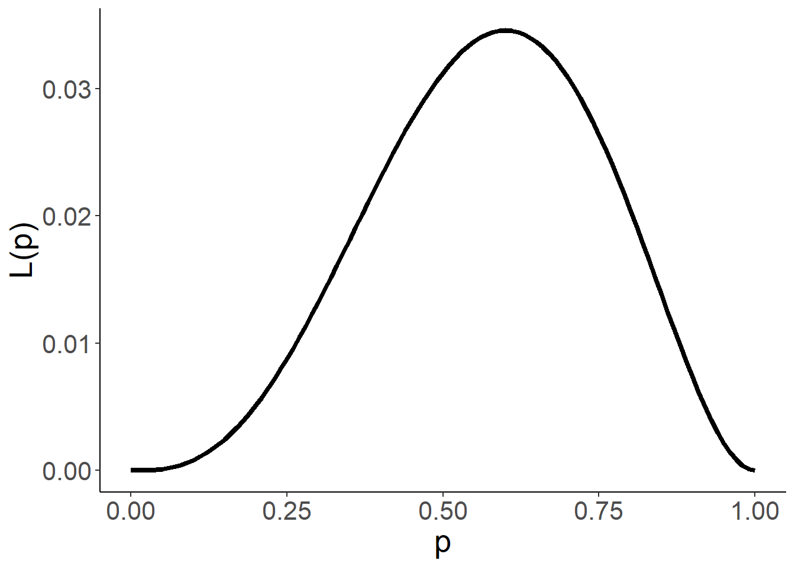
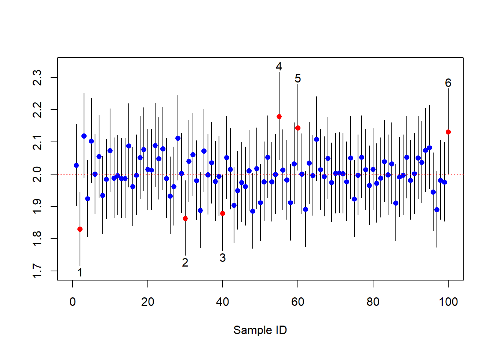
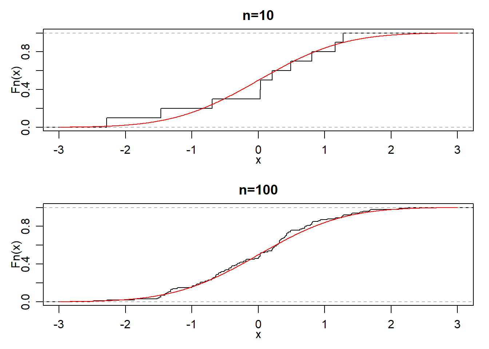
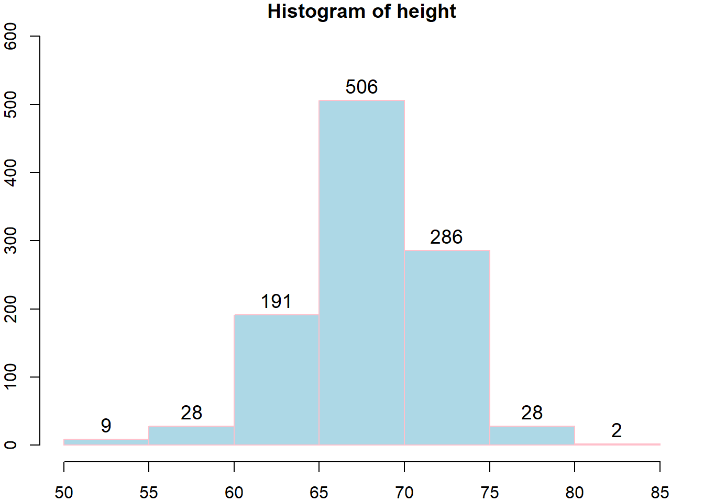
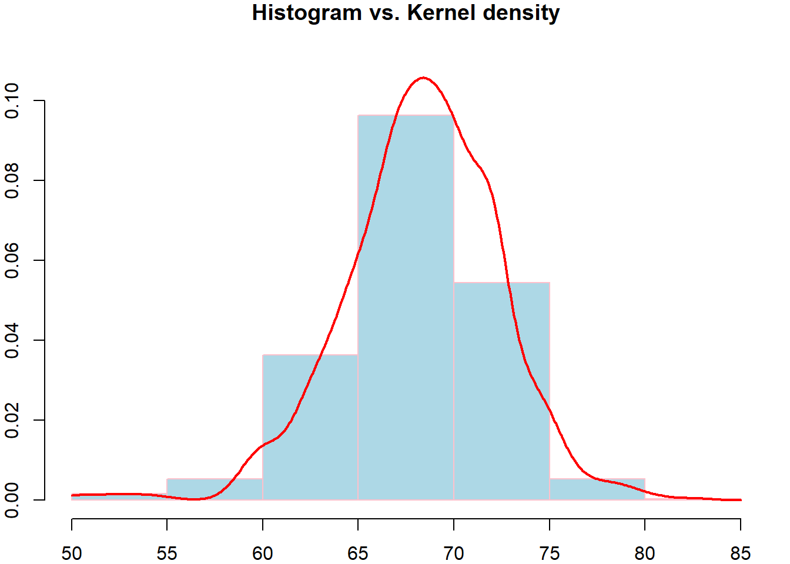
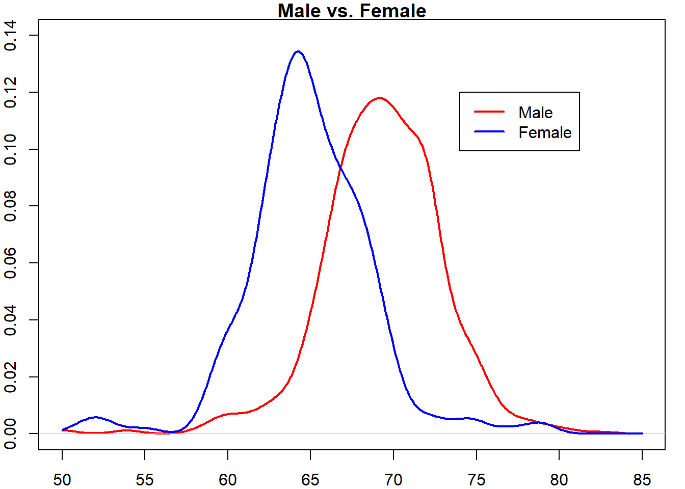

第 2 章 估计
2.1 参数估计
在实际问题中，对于一个总体\(X\)往往是仅知其分布的类型\(F_\theta\)，而参数\(\theta=(\theta_1,\dots,\theta_m)\in \Theta \subset \mathbb{R}^m\)是未知的。对任给的实值函数
\[g:\ \mathbb{R}^m\to \mathbb{R},\]
如何根据\(X\)的样本\(x_1,\dots,x_n\)估计\(g( \theta)\)的值呢？这就是统计推断中的“参数估计”问题。
点估计：寻找一个统计量\(\hat{\theta} = T(X_1,\dots,X_n)\)作为\(\theta\)的点估计
区间估计：寻找两个统计量\(\hat{ \theta}_1 = T_1(X_1,\dots,X_n)\), \(\hat{ \theta}_2 = T_2(X_1,\dots,X_n)\)，所构成的区间\([\hat{\theta}_1,\hat{\theta}_2]\)作为 \(\theta\)的区间估计
例 2.1 设\(X\sim N(\mu_1+\mu_2,\sigma^2)\), 则不难发现\(\theta=(\mu_1,\mu_2,\sigma^2)\)是不可识别的。估计参数\(\theta\)是没有统计意义的。
考虑一个测量问题（如温度、血压、距离等），记测量对象真实值为\(\theta\)，\(n\)次测量数据为\(x_1,x_2,\dots,x_n\)。相信大部分人都会用样本均值
\[\bar x = \frac{x_1+\dots+x_n}{n}\] 来估计\(\theta\)。但是，为什么用样本均值估计是合理的呢？这是最好的估计方式吗？这些是本章重点讨论的问题。
2.1.1 矩估计法
矩估计的想法来源于大数定理。如果总体\(X\)存在\(k\)阶矩，对任意\(\epsilon>0\),
\[ \lim_{n\to \infty} P(|\frac 1 n\sum_{i=1}^n X_i^k-E[X^k]|\ge \epsilon )=0. \]
这说明，当样本容量\(n\)较大时，样本\(k\)阶矩与总体\(k\)阶矩差别很小。矩法估计就是用样本\(k\)阶矩代替总体的\(k\)阶矩。通常用\(\hat{\theta}_M\)表示。一般步骤如下：
列出估计式\(E[X^k]=g_k(\theta_1,\dots,\theta_m),\ k=1,\dots,m.\)
求解关于估计量的方程组\(\theta_k = \theta_k(E[X^1],\dots,E[X^m])\)
用\(M_k=\frac 1 n\sum_{i=1}^n X_i^k\)替代\(E[X^k]\)得到矩估计\(\hat\theta_k = \theta_k(M_1,\dots,M_m)\)
解. (1)列出估计式
\[ \begin{cases} E[X] &= \mu\\ E[X^2] &= \mu^2+\sigma^2 \end{cases} \]
(2)求解关于估计量的方程组
\[ \begin{cases} \mu &= E[X]\\ \sigma^2 &= E[X^2]-(E[X])^2 \end{cases} \]
所以，\(\hat{\mu}_M = \bar X\), \(\hat{\sigma}^2_M = \frac{1}{n}\sum_{i=1}^n X_i^2-(\bar X)^2 = S_n^2.\)注：不难证明，总体的各阶中心矩的矩估计就是样本各阶中心矩。
解. 易知，\(E[X]=(a+b)/2,\ Var[X]= (b-a)^2/12\).
所以，
\[ \begin{cases} a &= E[X]-\sqrt{3Var[X]}\\ b &= E[X]+\sqrt{3Var[X]} \end{cases} \]
\[ \begin{cases} \hat a_M &= \bar{X}-\sqrt{3}S_n\\ \hat b_M &= \bar{X}+\sqrt{3}S_n \end{cases} \]例 2.4 设总体\(X\)的分布密度为
\[ f(x)=\frac{\theta}{2}e^{-\theta|x|},\ x\in\mathbb{R}, \theta>0. \]
求\(\theta\)的矩估计。解. \[ E[X]= 0,\ E[X^2]=\int_{-\infty}^{\infty}x^2\frac{\theta}{2}e^{-\theta|x|}d x=\theta\int_{0}^{\infty}x^2e^{-\theta x}d x=\frac{2}{\theta^2} \]
\[\hat{\theta}_M=\sqrt{\frac{2n}{\sum_{i=1}^n X_i^2}}.\]
除外，还可以由\(E[|X|]=1/\theta\)得到另一种矩估计。2.1.2 最大似然估计法
最大似然估计法最早由高斯(C.F.Gauss)提出，后来被 Fisher完善。最大似然估计这一名称也是Fisher给的。这是一个目前仍得到广泛应用的方法。它是建立在最大似然原理基础上的一个统计方法。
最大似然原理：最先出现的是概率最大的
定义 2.2 假设总体\(X\)为离散随机变量，其分布函数记为\(P(X=x)=f(x;\theta)\)，与参数\(\theta\)相关。设\(X_1,\dots,X_n\)为其样本，\(x_1,\dots,x_n\)为该样本的观测值。样本的似然函数(likelihood function)定义为观测到样本\(x_1,\dots,x_n\)的概率
\[L(x_1,\dots,x_n;\theta)=P(X_1=x_1,\dots,X_n=x_n)=\prod_{i=1}^{n}f(x_i;\theta). \]固定参数\(\theta\)，似然函数\(L(x_1,\dots,x_n;\theta)\)为样本的概率质量函数(Probability Mass Function, PMF)。另一方面，给定样本观测值\(x_1,\dots,x_n\)，似然函数\(L(x_1,\dots,x_n;\theta)\)是一个关于\(\theta\)的函数，其中\(\theta\in\Theta\)，有时简记为\(L(\theta)\)。
例 2.6 设总体\(X\sim B(1,p)\), 从中抽取样本的观测值为\(1,1,0,0,1\). 不难计算似然函数为
\[L(p)=p^3(1-p)^2,\ p\in (0,1).\]图像如下

对于该数据，不同\(p\)的值得到不同的概率。现在要估计\(p\)的值，一种合理的方式是找出使得该概率最大对应\(p\)的值作为估计值。这就是最大似然估计的核心思想。通过简单的计算，可以发现\(L(p)\)的最大值点发生在\(p=0.6\). 因此，\(0.6\)可以作为\(p\)的估计值。
更一般地，给定样本观测值\((x_1,\dots,x_n)\), 记\(L(x_1,\dots,x_n;\theta)\)的最大值点为\(\theta=T(x_1,\dots,x_n)\). 则\(\theta\)的最大似然估计量(MLE, maximum likelihood estimator)为 \[\hat{\theta}_L=T(X_1,\dots,X_n).\]
对于上述例子，如果观测数据是\(x_1,\dots,x_n\)，似然函数则为
\[ L(x_1,\dots,x_n;p)=\prod_{i=1}^{n}p^{x_i}(1-p)^{1-x_i}=p^{\sum_{i=1}^nx_i}(1-p)^{n-\sum_{i=1}^nx_i}.\]
令\(y=\sum_{i=1}^nx_i\)。为了便于计算，对似然函数取对数变换，得到对数似然函数为：
\[\ln L = y \ln p + (n-y)\ln (1-p).\] 对数似然函数的极大值点与似然函数的极大值点一致。故求其求导可得，对数似然方程为：
\[\frac{d \ln L}{d p} = y/p - (n-y)/(1-p)=0.\] 解得\(p= y/n=\frac{1}{n}\sum_{i=1}^nx_i\). 因为\(\frac{d^2\ln L}{d p^2}<0\), 所以\(p= y/n\)是极大值。最大似然估计量为\(\hat{p}_L = \bar X.\)
如果\(X\)是连续的总体，似然函数该如何定义？此时，若沿用上述定义，由于连续型随机变量在某点发生的概率为零，则有\(P(X_1=x_1,\dots,X_n=x_n)=0\). 然而，在该点一个领域的概率不为零。不妨考虑样本落在观测值点一个小邻域的概率。记\(O(x,\delta) = (x-\delta,x+\delta)\)为\(x\)的\(\delta\)邻域，则当\(\delta\)比较小时，
\[P(X\in O(x,\delta)) = F(x+\delta;\theta)-F(x-\delta;\theta) \approx f(x;\theta)\delta,\] 其中\(F\)和\(f\)分别为X的分布函数和密度函数。现考虑样本落在\(x_1,\dots,x_n\)的附近的概率，
\[P(X_1\in O(x_1,\delta_1),\dots,X_n\in O(x_n,\delta_n))\approx (\prod_{i=1}^n\delta_i)\prod_{i=1}^n f(x_i;\theta),\] 其中\(\delta_i\)为比较小的常数。从中可以看出，该概率的大小与\(\prod_{i=1}^n f(x_i;\theta)\)相关。我们把它定义成连续总体下样本的似然函数，即
\[L(x_1,\dots,x_n;\theta)=\prod_{i=1}^n f(x_i;\theta).\] 此时，样本的似然函数为样本的联合密度函数。
更一般的情形，样本不一定是独立同分布，此时似然函数同样可以定义为该样本的联合密度函数。本质上，似然函数是刻画样本在给定观测值处的“可能性”。PMF/PDF用来衡量这种“可能性”。
最大似然估计的一般步骤归纳如下：
第一步：写出似然函数\(L(x_1,\dots,x_n;\theta)\)
第二步：若似然函数\(L\)是\(\theta\)的可微函数，则最大值必然满足似然方程
\[\frac{d L}{d \theta}=0\]
解出\(\theta\), 并验证其是否是极大值：\[\frac{d^2 L}{d \theta^2}<0.\]
注1：为方便求导，一般求对数似然函数\(\ln L(x_1,\dots,x_n;\theta)\)求极大值点
注2：若有多个参数\(\theta_1,\dots,\theta_m\)，对每个变量求偏导，联立\(m\)个方程求解
注3：（对数）似然方程的解称为“驻点”(stationary point)，可能为（局部）极大或者极小值点，也可能为鞍点(saddle point)，为了进一步区分需要求 Hessian矩阵并分析其正定性。
图 2.1: 三种类型的驻点
解. 似然函数为
\[ L(x_1,\dots,x_n;\mu,\sigma^2)=\prod_{i=1}^{n}f(x_i)=\prod_{i=1}^{n}\frac{1}{\sqrt{2\pi}\sigma}e^{-(x_i-\mu)^2/(2\sigma^2)}\]
令\(\theta_1=\mu,\theta_2=\sigma^2\), 对数似然函数为：
\[\ln L = -(n/2)\ln (2\pi)-(n/2)\ln\theta_2-\frac{\sum_{i=1}^n(x_i-\theta_1)^2}{2\theta_2}\]
对数似然方程组为：
\[ \begin{cases} \frac{\partial \ln L}{\partial \theta_1} &=\frac{\sum_{i=1}^n(x_i-\theta_1)}{\theta_2}=0\\ \frac{\partial \ln L}{\partial \theta_2} &=-\frac{n}{2\theta_2}+\frac{\sum_{i=1}^n(x_i-\theta_1)^2}{2\theta_2^2}=0 \end{cases} \]
解得\(\hat{\mu}_L=\bar X,\ \hat{\sigma}^2_L = S_n^2\). (可以验证二阶导函数非正定，即取得极大值。)\[ L(x_1,\dots,x_n;a,b)=\frac{1}{(b-a)^n}\prod_{i=1}^{n} 1\{a\le x_i\le b\}\]
注意到\(L\)关于\(a,b\)不可微。容易观察到，当\(a=\min_{i=1,\dots,n}\{x_i\},\ b=\max_{i=1,\dots,n}\{x_i\}\)时\(L\)取得最大值。故
\[\hat{a}_L = X_{(1)},\ \hat{b}_L = X_{(n)}.\]
关于最大似然估计的一些说明:
最大似然估计的不变性：如果\(\hat{\theta}\)是\(\theta\)的最大似然估计，则对任一函数\(g(\theta)\), 其最大似然估计为\(g(\hat{\theta})\).
当分布中有多余的参数或者数据为截尾或缺失时，似然函数的求极大值比较困难。针对这种问题，文献
Dempster, A.P.; Laird, N.M.; Rubin, D.B. (1977). Maximum Likelihood from Incomplete Data via the EM Algorithm. Journal of the Royal Statistical Society, Series B. 39 (1): 1–38. (cited by 54539, 2018/8/18)
提出了一种有效的Expectation–Maximization (EM)算法。
2.1.3 矩估计与最大似然估计的对比
- 矩估计法（也称数字特征法）
- 直观意义比较明显，但要求总体\(k\)阶矩存在。
- 缺点是不唯一，此时尽量使用样本低阶矩。
- 观测值受异常值影响较大，不够稳健，实际中避免使用样本高阶矩。
- 估计值可能不落在参数空间
- 极大似然估计法
- 具有一些理论上的优点（不变性、渐近正态性）
- 缺点是如果似然函数不可微，没有一般的求解法则。
| 分布名称 | 记号 | 期望 | 方差 | 矩估计 | 极大似然估计 |
| 0-1分布 | \(B(1,p)\) | \(p\) | \(pq\) | \(\hat p_M=\bar{X}\) | \(\hat p_L=\bar{X}\) |
| 泊松分布 | \(Pois(\lambda)\) | \(\lambda\) | \(\lambda\) | \(\hat{\lambda}_M=\bar{X}\) | \(\hat{\lambda}_L=\bar{X}\) |
| 几何分布 | \(Geo(p)\) | \(1/p\) | \(q/p^2\) | \(\hat p_M=1/\bar{X}\) | \(\hat p_L=1/\bar{X}\) |
| 均匀分布 | \(\mathbb{U}[a,b]\) | \((a+b)/2\) | \((b-a)^2/12\) | \(\hat{a}_M=\bar X-\sqrt{3}S_n\) | \(\hat{a}_L=X_{(1)}\) |
| \(\hat{b}_M=\bar X+\sqrt{3}S_n\) | \(\hat{b}_L=X_{(n)}\) | ||||
| 指数分布 | \(Exp(\lambda)\) | \(1/\lambda\) | \(1/\lambda^2\) | \(\hat{\lambda}_M=1/\bar{X}\) | \(\hat{\lambda}_L=1/\bar{X}\) |
| 正态分布 | \(N(\mu,\sigma^2)\) | \(\mu\) | \(\sigma^2\) | \(\hat{\mu}_M=\bar X\) | \(\hat{\mu}_L=\bar X\) |
| \(\hat{\sigma}^2_M = S_n^2\) | \(\hat{\sigma}^2_L = S_n^2\) |
2.1.4 混合正态分布的参数估计
假设总体\(X\)的分布为：以概率\(\lambda\)服从\(N(\mu_1,\sigma_1^2)\), 以概率\(1-\lambda\)服从\(N(\mu_2,\sigma_2^2)\)。该混合分布的密度函数为
\[f(x;\lambda,\mu_1,\sigma_1^2,\mu_2,\sigma_2^2)=\frac{\lambda}{\sqrt{2\pi}\sigma_1}e^{-\frac{(x-\mu_1)^2}{2\sigma_1^2}}+\frac{1-\lambda}{\sqrt{2\pi}\sigma_2}e^{-\frac{(x-\mu_2)^2}{2\sigma_2^2}}.\]
样本似然函数为：
\[L(\lambda,\mu_1,\sigma_1^2,\mu_2,\sigma_2^2) = \prod_{i=1}^n \left[\frac{\lambda}{\sqrt{2\pi}\sigma_1}e^{-\frac{(x_i-\mu_1)^2}{2\sigma_1^2}}+\frac{1-\lambda}{\sqrt{2\pi}\sigma_2}e^{-\frac{(x_i-\mu_2)^2}{2\sigma_2^2}}\right].\]
不难发现，似然函数是无界的（见习题），所以最大似然估计不存在。然而，如果我们有先验的信息：\(\sigma_1=k\sigma_2\)，其中\(k\)是已知的数（比如1）。似然函数则可表示为：
\[L(\lambda,\mu_1,\mu_2,\sigma_2^2) =\prod_{i=1}^n\left[ \frac{\lambda}{\sqrt{2\pi}k\sigma_2}e^{-\frac{(x_i-\mu_1)^2}{2k^2\sigma_2^2}}+\frac{1-\lambda}{\sqrt{2\pi}\sigma_2}e^{-\frac{(x_i-\mu_2)^2}{2\sigma_2^2}}\right]. \]
此时，似然函数是有界的，所以最大似然估计存在。
设\(Y_i=1\)表示\(X_i\)来自\(N(\mu_1,\sigma_1^2)\)分布，\(Y_i=2\)表示\(X_i\)来自\(N(\mu_2,\sigma_2^2)\)分布。假设我们可以观测\(Y_i\)的值，基于样本\((X_i,Y_i),i=1,\dots,n\)，我们可以得到\(\lambda,\mu_1,\sigma_1^2,\mu_2,\sigma_2^2\)的最大似然估计。
令\(I = \{i=1,\dots,n|y_i=1\}\), 则似然函数为
\[\begin{align*} L(\lambda,\mu_1,\sigma_1^2,\mu_2,\sigma_2^2)&=\prod_{i\in I} \frac{\lambda}{\sqrt{2\pi}\sigma_1}e^{-\frac{(x_i-\mu_1)^2}{2\sigma_1^2}} \prod_{i\notin I}\frac{1-\lambda}{\sqrt{2\pi}\sigma_2}e^{-\frac{(x_i-\mu_2)^2}{2\sigma_2^2}}\\ &=\lambda^{|I|}(1-\lambda)^{n-|I|}\prod_{i\in I} \frac{1}{\sqrt{2\pi}\sigma_1}e^{-\frac{(x_i-\mu_1)^2}{2\sigma_1^2}} \prod_{i\notin I}\frac{1}{\sqrt{2\pi}\sigma_2}e^{-\frac{(x_i-\mu_2)^2}{2\sigma_2^2}}. \end{align*}\]
则只需分别求出上式中三部分的最大值点即可。对于第一部分，不难发现\(\hat\lambda = \frac 1 n\sum_{i=1}^n1\{Y_i=1\}\). 后两部分等价于求样本为\(\{X_i,i\in I\}\)和\(\{X_i,i\notin I\}\)时，对应正态总体的最大似然估计，所以最大似然估计分别为
\[\hat{\mu}_1=\frac{1}{|I|}\sum_{i\in I} X_i=\frac{\sum_{i=1}^nX_i\cdot1\{Y_i=1\}}{\sum_{i=1}^n1\{Y_i=1\}},\]
\[\hat{\sigma_1^2} = \frac{1}{|I|} \sum_{i\in I}(X_i-\hat{\mu}_1)^2=\frac{\sum_{i=1}^n(X_i-\hat\mu_1)^2\cdot1\{Y_i=1\}}{\sum_{i=1}^n1\{Y_i=1\}},\]
\[\hat{\mu}_2=\frac{\sum_{i=1}^nX_i\cdot1\{Y_i=2\}}{\sum_{i=1}^n1\{Y_i=2\}},\ \hat{\sigma_2^2} =\frac{\sum_{i=1}^n(X_i-\hat\mu_2)^2\cdot1\{Y_i=2\}}{\sum_{i=1}^n1\{Y_i=2\}}.\] 上述三式要求分母，否则相应部分的估计量可以为任意常数。
上述问题不难推广到\(K\ge 3\)个不同正态分布的混合的情形。然而，大部分问题，\(Y_i\)是不可观测的（即无标签）。Kiefer (1978) 证明了样本\(X_i\)的似然方程的某个解（对应局部极大值）也是有效的估计量，同样会收敛到真值。这说明了，似然方程的极大值点也可以作为一个有效的估计量。如何找到似然方程的极大值点？我们可以利用EM算法找出似然函数局部极大值点。参考：
另一方面，对于混合正态分布，我们可以通过矩法得到五个参数的估计量。Cohen (1967)给出了矩法估计的一般公式，转化成求一个9次多项式方程的负根。
2.1.5 EM算法
Expectation-Maximization (EM) 算法是由Dempster et al. (1977)提出。该算法的推导用到Jensen不等式。
定理 2.1 (Jensen不等式) 设\(A\)为\(\mathbb{R}^k\)中凸集，\(f(x)\)为\(A\)上凸函数，即对任意\(\lambda\in[0,1], x,y\in A\)，恒有
\[ f(\lambda x+(1-\lambda)y)\le \lambda f(x)+(1-\lambda)f(y). \] 如果\(k\)维随机向量\(X\)满足\(P(X\in A)=1\)，则有
\[f(E[X])\le E[f(X)].\]
进而，如果\(f\)为严格凸函数，\(f(E[X])=E[f(X)]\)当且仅当\(P(X=E[X])=1\)，即\(X\)为常数向量。 换言之，如果\(f\)为严格凸函数且\(X\)不为常数向量，则\(f(E[X])<E[f(X)]\).
如果\(f\)是凹函数，则定理中的不等式变号。注意到\(\ln x\)是\((0,\infty)\)上的严格凹函数，应用Jensen不等式得到下面一个结果。
例 2.9 如果\(X\)为一个取值为正的非常数随机变量，则有\(E[\ln X]<\ln (E[X])\).
EM算法用于求解不完备数据的极大似然估计。 设完备数据为\(x=(y,z)\)，其中\(y\)为观测数据（向量），\(z\)不可观测，称为潜变量。直接对观测数据求最大似然估计比较困难。 注意到观测数据的似然函数为
\[\begin{align*} L(\theta|y) &= \int p(y,z|\theta)dz=\int q(z|\eta)\frac{p(y,z|\theta)}{q(z|\eta)}dz\\ &=E_{q(z|\eta)}\left[\frac{p(y,z|\theta)}{q(z|\eta)}\right], \end{align*}\]
其中\(p(y,z|\theta)\)为完全数据的密度函数, \(q(z|\eta)\)为密度函数且满足：如果\(q(z|\eta)=0\)，则\(p(y,z|\theta)=0\)。对数似然函数
\[\ell(\theta|y)= \ln \left(E_{q(z|\eta)}\left[\frac{p(y,z|\theta)}{q(z|\eta)}\right]\right)\ge E_{q(z|\eta)}\left[\ln \left(\frac{p(y,z|\theta)}{q(z|\eta)}\right)\right]=:Q(q(z|\eta),\theta).\]
上式用到Jensen不等式，当且仅当\(p(y,z|\theta)/q(z|\eta)\)为常数（即不依赖\(z\)）时，上式等号成立，由于\(\int q(z|\eta)dz =1\)，不难得到
\[q(z|\eta)=\frac{p(y,z|\theta)}{p(y|\theta)}=p(z|y,\theta)=:q^*(z|\theta).\] 此时，\(\ell(\theta|y) = Q(q^*(z|\theta),\theta).\) 否则\(\ell(\theta|y)>Q(q(z|\eta),\theta)\). 假设第\(t\)步的估计值为\(\theta_t\)，构造如下迭代算法
\[\theta_{t+1} = \arg\max_{\theta\in\Theta} Q(q^*(z|\theta_t),\theta).\]
注意到，\(\ell(\theta_{t+1}|y)\ge Q(q^*(z|\theta_t),\theta_{t+1})\ge Q(q^*(z|\theta_t),\theta_{t})=\ell(\theta_t|y)\). 如果\(p(y,z|\theta_{t+1})/p(y,z|\theta_t)\)与\(z\)相关（即不为常数向量），则有\(\ell(\theta_{t+1}|y)>\ell(\theta_t|y)\). 所以，该迭代算法使得似然函数单调递增。如果\(\theta_t\)收敛到\(\theta^*\)，那么在满足一定条件下，\(\theta^*\)为似然函数的驻点。
注意到
\[Q(q^*(z|\theta_t),\theta)=E_{p(z|y,\theta_t)}\left[\ln \left(p(y,z|\theta)\right)\right]-E_{p(z|y,\theta_t)}\left[\ln \left(p(z|y,\theta_t)\right)\right].\] 上式等式最后一项与\(\theta\)无关，所以优化问题等价于
\[\theta_{t+1} = \arg\max_{\theta\in\Theta} E_{p(z|y,\theta_t)}\left[\ln \left(p(y,z|\theta)\right)\right].\]
EM算法包含两步：
第一步求期望\(E_{p(z|y,\theta_t)}\left[\ln \left(p(y,z|\theta)\right)\right]\), 该期望称为预期的对数似然函数。
第二步则求预期的对数似然函数最大值。
以下定理保证该迭代算法收敛到似然函数的驻点。
例 2.10 假设完备数据\((y,z)\)服从指数型分布族
\[p(y,z|\theta) = c(\theta)\exp\left(\sum_{i=1}^k T_i(y,z)c_i(\theta)\right)h(y,z).\]
则对数似然函数为： \[ \ln p(y,z|\theta) = \ln c(\theta)+\sum_{i=1}^k T_i(y,z)c_i(\theta)+\ln h(y,z). \]
则
\[\begin{align*} \theta_{t+1} &= \arg\max_{\theta\in\Theta} E_{p(z|y,\theta_t)}\left[\ln c(\theta)+\sum_{i=1}^k T_i(y,z)c_i(\theta)+\ln h(y,z)\right]\\ &=\arg\max_{\theta\in\Theta} \left\lbrace\ln c(\theta)+\sum_{i=1}^k c_i(\theta)E_{p(z|y,\theta_t)}[T_i(y,z)]\right\rbrace. \end{align*}\]
要求解该优化问题，只须求\(E_{p(z|y,\theta_t)}[T_i(y,z)]=E_{\theta_t}[T_i(y,z)|y]\)的表达式即可。
例 2.11 再次考虑混合正态分布。设完全数据\(x=((y_i,z_i),i=1,\dots,n)=(y,z)\)，其中\(z_i=1\)或者\(2\)， 当\(z_i=1\)是表示\(Y_i\sim N(\mu_1,\sigma_1^2)\)，当\(z_i=2\)是表示\(Y_i\sim N(\mu_2,\sigma_2^2)\). 这里分类变量\(z_i\)是不可以观测。注意到直接对观测数据\(y\)构建似然函数，然后求极大值是非常困难的。下面我们通过EM算法求解。记\(\theta=(\mu_1,\sigma_1^2,\mu_2,\sigma_2^2,\lambda)\). 完全数据的对数似然函数为
\[ \ln p(y,z|\theta)=\sum_{i=1}^n \ln p(y_i,z_i|\theta) = \sum_{i=1}^n \ln p(y_i|z_i,\theta)+\ln p(z_i|\theta). \]
首先计算
\[\begin{align*} &E_{p(z|y,\theta_t)}[\ln p(y,z|\theta)]=E_{p(z|y,\theta_t)}\left[\sum_{i=1}^n \ln p(y_i|z_i,\theta)+\ln p(z_i|\theta)\right]\\ &=\sum_{i=1}^n \sum_{j=1}^2 P(z_i=j|y_i,\theta_t)[-\frac 1 2\ln (2\pi)-\ln\sigma_j-\frac{(x_i-\mu_j)^2}{2\sigma_j^2}+\ln p(z_i=j|\theta)]\\ &=-\frac 12\sum_{i=1}^n \sum_{j=1}^2 w_{ij}[\ln \sigma_j^2+(y_i-\mu_j)^2/\sigma_j^2]+\sum_{i=1}^n [w_{i1}\ln\lambda+w_{i2}\ln(1-\lambda)]\\ &=s_1(\mu_1,\mu_2,\sigma_1^2,\sigma_2^2)+s_2(\lambda). \end{align*}\]
其中，
\[\begin{align*} w_{ij}&= P(z_i=j|y_i,\theta_t)=\frac{p(y_i|z_i=j,\theta_t)p(z_i=j|\theta_t)}{\sum_{j=1}^2p(y_i|z_i=j,\theta_t)p(z_i=j|\theta_t)}\\ &=\frac{\phi(y_i;\mu_{j,t},\sigma_{j,t}^2)(\lambda_{t}1\{j=1\}+(1-\lambda_{t})1\{j=2\})}{\lambda_{t}\phi(y_i;\mu_{1,t},\sigma_{1,t}^2)+(1-\lambda_{t})\phi(y_i;\mu_{2,t},\sigma_{2,t}^2)}, \end{align*}\]
\[s_1(\mu_1,\mu_2,\sigma_1^2,\sigma_2^2)=-\frac 12\sum_{i=1}^n \sum_{j=1}^2 w_{ij}[\ln \sigma_j^2+(y_i-\mu_j)^2/\sigma_j^2],\]
\[s_2(\lambda)=\sum_{i=1}^n [w_{i1}\ln\lambda+w_{i2}\ln(1-\lambda)],\]
\(\phi(x;\mu,\sigma^2)\)为\(N(\mu,\sigma^2)\)的密度函数。 注意到\(w_{ij}\)与\(\theta\)无关，可视为常数。对\(E_{p(z|y,\theta_t)}[\ln p(y,z|\theta)]\)求最大值，等价于分别对\(s_1,s_2\)两部分求最大值。先考虑对第一部分\(s_1(\mu_1,\mu_2,\sigma_1^2,\sigma_2^2)\)求最大值. 对\(\mu_j\)求偏导得到
\[\frac{\partial s_1(\mu_1,\mu_2,\sigma_1^2,\sigma_2^2)}{\partial \mu_j}=\sum_{i=1}^n w_{ij}[(y_i-\mu_j)/\sigma_j^2]=0.\] 于是有
\[\mu_{j,t+1}=\frac{\sum_{i=1}^nw_{ij}y_{i}}{\sum_{i=1}^nw_{ij}}, j=1,2.\]
对求\(\sigma^2_j\)偏导得到
\[\frac{\partial s_1(\mu_1,\mu_2,\sigma_1^2,\sigma_2^2)}{\partial \sigma^2_j}=-\frac 12\sum_{i=1}^n w_{ij}\left[\frac 1{\sigma_j^2}-\frac{(y_i-\mu_j)^2}{\sigma_j^4}\right]=0.\]
于是有
\[\sigma_{j,t+1}^2=\frac{\sum_{i=1}^nw_{ij}(y_i-\mu_{j,t+1})^2}{\sum_{i=1}^nw_{ij}}.\]
考虑第二部分\(s_2(\lambda)\)求最大值. 对\(\lambda\)求导得，
\[s_2'(\lambda)=\sum_{i=1}^n\left(\frac{w_{i1}}{\lambda}-\frac{w_{i2}}{1-\lambda}\right)=0.\]
于是有
\[\lambda_{t+1}=\frac{\sum_{i=1}^nw_{i1}}{\sum_{i=1}^n\sum_{j=1}^2w_{ij}}=\frac{1}{n}\sum_{i=1}^nw_{i1}.\]
图 2.2: EM算法求解混合正态分布，红色为真实值，n=10000
2.2 估计的优良性标准
前面介绍了点估计中两种经典的方法，对于同一个问题，两种方法得到的估计量可能不一样。自然要问，哪种最好？ 本节讨论估计量的优良性质。
2.2.1 无偏性
定义 2.3 设总体\(X\sim F(x;\theta),\theta\in \Theta\), \(T(X_1,\dots,X_n)\)为\(g(\theta)\)的估计量。
- 无偏估计量：
\[E[T(X_1,\dots,X_n)]=g(\theta), \forall \theta\in \Theta\]
- 渐近无偏估计量：
无偏性意味着：虽然估计量\(T\)由于随机可能偏离真值\(g(\theta)\), 但取其平均值（期望）却等于\(g(\theta)\). 即没有系统偏差。
样本均值是总体的均值的无偏估计，即\(E[\bar X]=E[X]\)
样本方差是总体方差的渐近无偏估计，即\(\lim_{n\to \infty}E[S_n^{2}]=Var[X]\)
修正样本方差是总体方差的无偏估计，即\(E[S_n^{*2}]=Var[X]\)
如果\(g(\theta)\)存在无偏估计量，则称\(g(\theta)\)是可估的。但注意不是所有的参数估计都存在一个无偏估计量。
证明. 假设\(T(X_1,\dots,X_n)\)为\(1/\theta\)无偏估计量。不妨考虑\(n=1\)情形，
\[E[T] = \sum_{i=0}^k C_k^i \theta^i(1-\theta)^{k-i} T(i)=:h(\theta).\] 显然当\(\theta\to 0\), \(h(\theta)\to T(0)\), 但\(\frac{1}{\theta}\to \infty\). 所以，\(E[T]\neq 1/\theta\).此外，还应当注意一点是：无偏估计量不一定比有偏的估计量好（如下图所示）。下节给出一个评判标准，并通过一个具体的例子说明有时候有偏估计量更好。
图 2.3: 无偏VS有偏
2.2.2 均方误差
定义 2.4 设\(T(X_1,\dots,X_n)\)为\(g(\theta)\)的估计量，其均方误差 (mean squared error, MSE)为
\[M_{\theta}(T):=E_\theta[(T(X_1,\dots,X_n)-g(\theta))^2].\]
均方根误差 (root mean squared error, RMSE)为
\[R_{\theta}(T):=\sqrt{E_\theta[(T(X_1,\dots,X_n)-g(\theta))^2]}.\]注意到：
\[M_{\theta}(T)=(E[T]-g(\theta))^2+Var(T)=\text{偏差}^2+\text{方差}.\]
注：如果\(T\)是\(g(\theta)\)的无偏估计，则\(M_{\theta}(T)=Var(T)\)
比较两个估计量的优劣
定义 2.5 若\(T_1(X_1,\dots,X_n)\)和\(T_2(X_1,\dots,X_n)\)都为\(g(\theta)\)的估计量，
- 如果\(M_{\theta}(T_1)\le M_{\theta}(T_2),\forall \theta\in \Theta\), 则称\(T_1\)不次于\(T_2\)。
- 在此基础上，如果存在一个\(\theta_0\in\Theta\)使得\(M_{\theta_0}(T_1)< M_{\theta_0}(T_2)\), 则称\(T_1\)比\(T_2\)有效。
解. \(E[\hat{\mu}]=\mu\Leftrightarrow \sum_{i=1}^nC_i = 1\)
\[Var[\hat{\mu}]=\sigma^2\sum_{i=1}^nC_i^2\ge \sigma^2\frac{(C_1+\dots+C_n)^2}{n}=\frac{\sigma^2}{n}.\]
而且唯一的最小值在\(C_i=1/n,i=1,\dots,n\)处取得。例 2.14 设\(X_1,\dots,X_n\)为\(N(\mu,\sigma^2)\)分布的样本，参数\(\mu,\sigma^2\)未知。样本方差\(S_n^2\)与修正样本方差\(S_n^{*2}\)作为\(\sigma^2\)的两种估计量，哪个更有效？
解. 由于\(S_n^{*2}\)是无偏的，所以均方误差
\[M(S_n^{*2}) = Var[S_n^{*2}]=\frac{2\sigma^4}{n-1}.\]
对\(S_n^{2}\), 其均方误差为
\[\begin{align*} M(S_n) &= Var[S_n^{2}]+(E[S_n^2]-\sigma^2)^2\\ &=\frac{2(n-1)\sigma^4}{n^2}+(\frac{(n-1)\sigma^2}{n}-\sigma^2)^2 \\&=\frac{(2n-1)\sigma^4}{n^2}. \end{align*}\]
又
\[\frac{M(S_n^{*2})}{M(S_n^{2})}=\frac{2n^2}{(n-1)(2n-1)}>1\]
所以，\(S_n^{2}\)比\(S_n^{*2}\)有效。
启发：无偏估计量不一定是最有效的。
思考：对于上题，考虑估计量\(T_k=k\sum_{i=1}^n(X_i-\bar X)^2\)，其中\(k\)为给定常数。特别地，当\(k=1/n\)时，\(T_k=S_n^2\)；当\(k=1/(n-1)\)时，\(T_k=S_n^{*2}\)。样本方差\(S_n^{2}\)是不是比其它的\(T_k\)更有效？如果不是，那么最优的\(k\)是多少？
2.2.3 一致最小方差无偏估计
定义 2.6 如果\(T_0(X_1,\dots,X_n)\)为\(g(\theta)\)的无偏估计，如果对于\(g(\theta)\)的任意无偏估计量\(T(X_1,\dots,X_n)\)都有
\[Var[T_0]\le Var[T],\ \forall\theta\in\Theta,\]
则称\(T_0\)为\(g(\theta)\)的一致最小方差无偏估计量 (uniformly minimum-variance unbiased estimator, UMVUE)。 如果\(Var[T_0]\le Var[T]\)在\(\theta=\theta_0\)处成立，则称\(T_0\)为\(g(\theta)\)的局部最小方差无偏估计量 (locally minimum-variance unbiased estimator, LMVUE)。例 2.15 令\(X\)为取值\(-1,0,1,\dots\)的离散型随机变量，分布为
\[P(X=-1)=p,\ P(X=k)=q^2p^k,\ k=0,1,\dots,\] 其中\(0<p<1,\ q=1-p\)。现考虑用\(X\)来估计\(p\)和\(q^2\). 对于估计\(p\)，一个简单的无偏估计为
\[T_1 = 1\{X=-1\}.\] 对于估计\(q^2\)，一个简单的无偏估计为 \[T_2 = 1\{X=0\}.\] 为求解最小方差估计量，现介绍以下引理。对于上例，考虑“零”的无偏估计\(U=U(X)\)。注意到，
\[\begin{align*} E[U]&=\sum_{i=-1}^\infty U(i)P(X=i)\\ &=pU(-1)+q^2\sum_{i=0}^\infty U(i)p^i=0,\ \forall p\in(0,1). \end{align*}\]
令\(p\to 0\), 可得\(U(0)=0\). 于是，
\[\sum_{k=1}^\infty U(k)p^{k-1} + \frac{U(-1)}{(1-p)^2}=0.\] 注意到\(1/(1-p)^2=\sum_{k=1}^\infty kp^{k-1}\). 则有
\[\sum_{k=1}^\infty [U(k)+kU(-1)]p^{k-1} =0.\] 由于上式对于任意\(p\in (0,1)\)，则所有系数应该为零，即\(U(k)=-kU(-1),k=1,\dots,\infty\). 这意味着，\(U\)为“零”的无偏估计量当且仅当\(U(k)=ak\)对于所有的\(k=-1,0,1,\dots\)和某个\(a\)。要使方差最小等价于最小化二阶矩：
\[E[(T_i-U)^2]=\sum_{k=-1}^\infty P(X=k)[T_i(k)-ak]^2,\ i=1,2.\]
两种情况下，最小值点分别为
\[a_1^* = -\frac{p}{p+q^2\sum_{k=1}^\infty k^2p^k},\ a_2^*=0.\] 由于\(a_2^*\)不依赖\(p\)，所以\(T_2^*=T_2-a_2^*X=T_2\)是UMUVE. 但\(a_1^*\)依赖\(p\)，所以\(T_1^*=T_1-a_1^*X\)是LMUVE，对于估计\(p\)，不存在一致最小方差无偏估计量。
通过这个例子，我们发现对于同一总体，有些参数估计问题存在UMVUE，有些则不存在。那么自然要问，什么情况下所有可估的参数一定存在UMVUE？Blackwell, Rao, Lehmann, Scheffe等统计学家获得了一系列寻求UMVUE的理论和方法。为解决这个问题，下面先引入完全统计量的概念。
如何理解统计量的完全性？假设非常数统计量\(T\)的分布与参数\(\theta\)无关，则对于所有的函数\(u(x)\), \(E[u(T)]\)的值为常数\(c\)，与\(\theta\)无关。这表明\(E[u(T)-c]=0\)对任意的\(\theta\)成立，但由于\(u\)的任意性，\(u(T)-c\)可以不为零（比如取\(u(T)=T\)），故\(T\)不可能为完全统计量。如果统计量\(T\)的分布与参数\(\theta\)无关，我们称此类统计量为辅助统计量。这类统计量不包含参数信息，故认为是“辅助的”。完全性排除了非常数辅助统计量。
证明. 注意到\(T\sim B(n,p)\)。假设对一切\(p\in(0,1)\)都有\(E[u(T)]=0\)，则
\[E[u(T)]=\sum_{i=0}^{n}u(i)C_n^ip^i(1-p)^{n-i}= 0.\] 令\(y=p/1-p\)，则对任意\(y\in \mathbb{R}\)都有\(\sum_{i=0}^n C_n^iu(i)y^i=0\)。等式左边为\(y\)的多项式，所以该多项式的所有系数均为0，即\(u(i)=0,\ i=0,\dots,n\). 这意味着\(u(T)=0\). 这就说明\(T\)为完全统计量。定理 2.3 考虑指数型分布族\(\mathcal{F}=\{f_\theta(x);\theta\in\Theta\}\)中的分布\(f_\theta(x)\)（分布列或者密度函数）都可以表示成如下形式：
\[f_\theta(x)=c(\theta)\exp\{\sum_{j=1}^kc_j(\theta)T_j(x)\}h(x).\] 如果\(\Theta\)有内点，则该分布族的充分统计量
\[\left(\sum_{i=1}^nT_1(x_i),\dots,\sum_{i=1}^nT_k(x_i)\right)\] 是完全的。证明. 设\(T_1\)为\(g(\theta)\)的任意无偏估计量，记\(\psi_1(t) = E[T_1|T=t]\). 由于\(T\)是充分统计量，所以\(\psi_1(t)\)与参数\(\theta\)无关，即\(\psi_1(T)=E[T_1|T]\)为一统计量。由全期望公式知，\(E[\psi_1(T)]=E[E[T_1|T]]=E[T_1]=g(\theta)\). 所以\(\psi_1(T)\)为\(g(\theta)\)的无偏估计量。 由全方差公式知，
\[Var[T_1] = E[Var[T_1|T]]+Var[E[T_1|T]]\ge Var[\psi_1(T)].\]
同理，设\(T_2\)为\(g(\theta)\)的另一无偏估计量，\(\psi_2(T)=E[T_2|T]\)同样是无偏的，且\(Var[\psi_2(T)]\le Var[T_2].\) 令\(u(x) = \psi_2(x)-\psi_1(x)\). 则\(E[u(T)]=E[\psi_2(T)]-E[\psi_1(T)]=0\). 由于\(T\)是完全统计量，所以\(P(\psi_2(T)=\psi_1(T))=1\), 这表明\(\psi_2(T)\)和\(\psi_1(T)\)在概率意义上是相等的，为UMVUE.该定理表明如果存在完全充分统计量\(T\)，UMVU估计量必然可以表示为该统计量的函数\(\psi(T)\)。根据这个性质可以求解UMVU估计量，即求解方程
\[E[\psi(T)]=g(\theta), \forall \theta\in\Theta.\]
解. 由定理2.3知，\(T=\sum_{i=1}^n X_i\)为完全充分统计量。所以，对任意的\(p\in(0,1)\)恒有
\[E[\psi(T)]=\sum_{i=0}^n \psi(i)C_n^i p^i(1-p)^{n-i} = p(1-p).\]
令\(\rho = p/(1-p)\), 则\(p = \rho/(1+\rho)\). 上式等价于
\[\sum_{i=0}^n \psi(i)C_n^i \rho^i = \rho(1+\rho)^{n-2}=\sum_{i=1}^{n-1}C_{n-2}^{i-1}\rho^i.\]
比较系数可得
\[\psi(x)=\frac{(n-x)x}{n(n-1)}.\]
所以，\(p(1-p)\)的UMUV估计量为\(n(1-\bar X)\bar X/(n-1)\).
注意到\(X_i\)取值为\(0,1\), 所以\(X_i=X_i^2\). 于是，
\[S_n^2=\frac 1n\sum_{i=1}^n X_i^2-(\bar X)^2=\frac 1n\sum_{i=1}^n X_i-(\bar X)^2=\bar X(1-\bar X).\]
因此，\(S_n^{*2}=nS_n^2/(n-1)=n(1-\bar X)\bar X/(n-1)\)为上述推导的UMUVE.
另外还可以通过求条件期望的方式得到UMVU估计量。假设\(T_1\)是\(g(\theta)\)的任意无偏估计量，\(T\)为完全充分统计量。则\(E[T_1|T]\)为UMVU估计量。这种方法的难点在于计算条件期望。
对于正态分布总体\(X\sim N(\mu,\sigma^2)\)，我们知道\((\bar X,S_n^2)\)为完全充分统计量。则\(\bar X\)为\(\mu\)的UMVUE, \(S_n^{*2}\)为\(\sigma^2\)的UMVUE. 下面考虑其它参数的UMVUE.
例 2.19 设总体\(X\sim N(\mu,\sigma^2)\)，其CDF记为\(F(x)\)。
给定\(\alpha\in (0,1)\)，求分位数\(F^{-1}(\alpha)\)的UMVUE.
- 假设\(\sigma=1\), 给定\(u\in \mathbb{R}\)，求\(F(u)\)和\(F'(u)\)的UMVUE.
解. （1）注意到\(F^{-1}(\alpha)=\mu+u_\alpha \sigma\). 又\(\bar X\)是\(\mu\)的无偏估计。现在先求\(\sigma\)的无偏估计。由抽样分布定理知，
\[Y:=\frac{nS_n^2}{\sigma^2}\sim \chi^2(n-1).\]
对任意的\(r>1-n\), 有
\[\begin{align*} E[(S_n/\sigma)^r]&=E[n^{-r/2}Y^{r/2}]=n^{-r/2}\int_0^\infty x^{r/2}\frac{x^{\frac {n-1}2-1}e^{-\frac x2}}{2^{\frac {n-1}2}\Gamma((n-1)/2)}dx\\ &=\frac{2^{\frac {r+n-1}2}\Gamma((r+n-1)/2)}{n^{r/2}2^{\frac {n-1}2}\Gamma((n-1)/2)}\int_0^\infty \frac{x^{(r+n-1)/2-1}e^{-x/2}}{2^{\frac {r+n-1}2}\Gamma((r+n-1)/2)}dx\\ &=\frac{2^{\frac {r+n-1}2}\Gamma((r+n-1)/2)}{n^{r/2}2^{\frac {n-1}2}\Gamma((n-1)/2)}\\ &=\frac{2^{r/2}\Gamma((r+n-1)/2)}{n^{r/2}\Gamma((n-1)/2)}=:K_{n,r}. \end{align*}\]
所以，
\[E[S_n^r]=\left(\frac 2n\right)^{r/2}\frac{\Gamma((r+n-1)/2)}{\Gamma((n-1)/2)}\sigma^r=K_{n,r}\sigma^r.\]
特别地，取\(r=1\)，则\(E[S_n]=K_{n,1}\sigma\). 所以\(S_n/K_{n,1}\)是\(\sigma\)的无偏估计。由此可得，\(F^{-1}(\alpha)\)的一个无偏估计量为
\[\bar X+u_\alpha S_n/K_{n,1}.\]
该统计量为完全充分统计量\((\bar X,S_n^2)\)的函数，所以是UMVUE.
（2）当\(\sigma\)已知时，\(\bar X\)是\(\mu\)的完全充分统计量。令\(T_1=1\{X_1\le u\}\)，则有\(E(T_1)=P(X_1\le u)=F(u)\)。所以，\(T_1\)为\(F(u)\)的无偏估计。考虑
\[\begin{align*} E[T_1|\bar X=\bar x]&=P(X_1\le u|\bar X=\bar x)=P(X_1-\bar X\le u-\bar x|\bar X=\bar x)\\ &=P(X_1-\bar X\le u-\bar x)=\Phi\left[\sqrt{\frac{n}{n-1}}(u-\bar x)\right]. \end{align*}\]
其中用到\(\bar X\)与\(X_1-\bar X\)独立，且\(X_1-\bar X\sim N(0,(n-1)/n)\). 因此，\(\Phi\left[\sqrt{\frac{n}{n-1}}(u-\bar X)\right]\)为\(F(u)\)的UMVUE. 不难发现，
\[\frac{\partial }{\partial u}\Phi\left[\sqrt{\frac{n}{n-1}}(u-\bar X)\right]=\sqrt{\frac{n}{n-1}}\phi\left[\sqrt{\frac{n}{n-1}}(u-\bar X)\right]\]
是\(F'(u)\)的无偏估计量，从而为UMVUE. 这里\(\Phi\)和\(\phi\)分别为标准正态分布的CDF和PDF.
上题第二问中，如果\(\sigma\)未知，经过柯尔莫哥洛夫(1950)研究，UMVUE同样存在，但推导过程比较繁琐，这里省略。结果见陈家鼎等教材P26-27.
UMVUE考虑无偏估计中最好的一种。注意到在正态总体下，总体方差的UMVUE为修正样本方差，修正样本方差的均方误差却大于样本方差的均方误差。这表明如果考虑所有类型的估计量，UMVUE不一定是最好的。那为什么不在所有的估计量中研究所谓最好的估计量呢？是否可以相应地定义“一致最小均方误差估计量”？然而，这样的估计量是不存在的。不妨\(g(\theta)\)不恒为一个常数。假设存在它的估计量\(T_0\)，对于所有的估计量\(T\)满足\(M_\theta (T_0)\le M_\theta(T),\forall\theta\in\Theta\)，即\(T_0\)为一致最小均方误差估计量。那么，对任意\(\theta_0\in\Theta\)，取\(T=g(\theta_0)\)，则\(M_{\theta_0} (T_0)\le M_{\theta_0}(T)=0\), 从而有\(P(T_0=g(\theta_0))=1\). 由于\(\theta_0\)的任意性以及\(g(\theta)\)不恒为一个常数，这样的\(T_0\)是不存在的。这也就是为什么我们在无偏估计量中考虑最优性的原因。
定理 2.5 (Cramer-Rao不等式) 设总体\(X\)的密度为\(f(x;\theta)\), 参数\(\theta\in (a,b)\). \(X_1,\dots,X_n\)为\(X\)的样本，\(\psi(X_1,\dots,X_n)\)是\(g(\theta)\)的一个无偏估计，且满足下列正则性条件：
- \(X\)的支撑与\(\theta\)无关；
- \(g'(\theta)\)和\(\frac{df(x;\theta)}{d\theta}\)都存在且对一切\(\theta\)有
\[\begin{align*} \int_{-\infty}^\infty \frac{df(x;\theta)}{d\theta} d x &= 0,\\ \int_{-\infty}^\infty\frac d{d\theta} L(\vec x;\theta) d \vec x&=0,\\ \frac d{d\theta}\int_{-\infty}^\infty \psi(\vec x) L(\vec x;\theta) d \vec x&=\int_{-\infty}^\infty \psi(\vec x) \frac d{d\theta}L(\vec x;\theta) d \vec x, \end{align*}\]
- \(I(\theta):=E[(\frac {d\ln f(X;\theta)}{d\theta})^2]>0\),
证明. \[\begin{align*} g'(\theta) &= dE[\psi(X_1,\dots,X_n)]/d\theta \\ &=\frac{d}{d\theta}\int \psi(\vec x)L(\vec x;\theta)d \vec x\\ &=\int \psi(\vec x)\frac{d}{d\theta}L(\vec x;\theta)d \vec x\\ &=\int [\psi(\vec x)-g(\theta)]\frac{d}{d\theta}L(\vec x;\theta)d \vec x\\ &=\int [\psi(\vec x)-g(\theta)]\frac{d \ln L(\vec x;\theta)}{d\theta} L(\vec x;\theta)d \vec x\\ &=E\left[[\psi(\vec X)-g(\theta)]\frac{d \ln L(\vec X;\theta)}{d\theta}\right]. \end{align*}\]
\[\begin{align*} [g'(\theta)]^2 &\le E[[\psi(\vec X)-g(\theta)]^2] E[(\frac{d}{d\theta}\ln L(\vec X;\theta))^2]\\ &=Var[\psi(\vec X)]E[(\sum_{i=1}^n \frac{d\ln f(X_i;\theta)}{d\theta})^2]\\ &=Var[\psi(\vec X)] n I(\theta). \end{align*}\]
其中用到
\[\begin{align*} E\left[\frac{d\ln f(X_i;\theta)}{d\theta}\right]&=\int \frac{\frac{df(x;\theta)}{d\theta}}{f(x;\theta)}f(x;\theta)dx\\&=\int \frac{df(x;\theta)}{d\theta}dx=0. \end{align*}\]C-R不等式给出无偏估计量方差的下界，如果某个无偏估计量达到这个下界且定理2.5中的条件对所有的无偏估计成立，则可以说明是该无偏估计量是一致最小方差无偏的。然而，有些情况下，C-R不等式的下界不一定达到，见陈家鼎等编著的教材例2.9, p30. \(I(\theta)\)叫做Fisher信息量。离散情形有类似的结论。
有时候定理2.5中的条件并不满足，但C-R不等式的下界还是可以用来刻画模型参数的“可估能力”。该下界越小越容易得到精度更高的估计。
例 2.20 设\(X\sim N(\mu,\sigma^2)\), 其中\(\mu\)未知，\(\sigma\)已知。 Fisher信息量为
\[I(\mu) = E\left[(\frac {d\ln f(X;\mu)}{d\mu})^2\right]=\frac 1{\sigma^4}E[(X-\mu)^2]=\frac 1{\sigma^2}.\]
\[Var[\bar X] = \frac{\sigma^2}{n}=\frac{1}{nI(\mu)}\]
样本均值\(\bar X\)的方差达到了C-R不等式的下界。
试证明：若\(\mu\)已知，则\(\sigma^2\)的估计量\(\frac 1n\sum_{i=1}^n(X_i-\mu)^2\)的方差达到了C-R不等式的下界。
2.2.4 统计量的大样本性质
- 统计量的相合性(consistency)
（弱）相合估计：称\(T_n(X_1,\dots,X_n)\)是\(g(\theta)\)的相合估计，如果对任何
\(\epsilon>0\), 有\[\lim_{n\to\infty}P(|T_n-g(\theta)|\ge \epsilon)=0.\]
也称\(T_n\)依概率收敛到\(g(\theta)\)，记为\(T_n\stackrel p\to g(\theta)\).
强相合估计：称\(T_n(X_1,\dots,X_n)\)是\(g(\theta)\)的强相合估计，如果
\[P(\lim_{n\to\infty}T_n=g(\theta))=1.\] 也称\(T_n\)以概率1收到\(g(\theta)\)，记为敛\(T_n\stackrel {w.p.1}\to g(\theta)\).
说明
- 由强大数定理知，矩估计一般是强估计的
- 最大似然估计在十分广泛的条件下也是有相合性（见下一节）
引理 2.2 如果\(T_n\stackrel p\to a\)，且函数\(f(x)\)在\(x=a\)处连续，则\(f(T_n)\stackrel p\to f(a)\).
证明. 因为\(f(x)\)在\(x=a\)处连续，所有对任意\(\epsilon>0\)存在\(\delta>0\)使得任意\(x\)满足\(|x-a|<\delta\)，均有\(|f(x)-f(a)|<\epsilon\). 注意到\(\{|f(T_n)-f(a)|\ge \epsilon\}\subset \{|T_n-a|\ge \delta\}\). 所以
\[0\le \lim_{n\to \infty} P(|f(T_n)-f(a)|\ge \epsilon)\le \lim_{n\to \infty} P(|T_n-a|\ge \delta)=0.\]
这表明\(f(T_n)\stackrel p\to f(a)\).
该引理容易推广到多元连续的情形。
引理 2.3 如果\(T_n^{(i)}\stackrel p\to a_i\), \(i=1,\dots,k\)，且\(f(x_1,\dots,x_k)\)在\((a_1,\dots,a_k)\)点连续，则\(f(T_n^{(1)},\dots,T_n^{(k)})\stackrel p\to f(a_1,\dots,a_k)\).
- 样本均值\(\bar X\)是\(\mu\)的相合估计量；
- 样本\(k\)阶原点矩\(M_k\)是总体\(k\)阶原点矩\(E[X^k]\)的相合估计量；
- 样本方差\(S_n^2\)和修正样本方差\(S_n^{2*}\)都是\(\sigma^2\)的相合估计量。
证明. 由辛钦大数定律知，\(\bar X\stackrel p\to \mu\), \(M_k\stackrel p\to E[X^k]\). 由引理2.3得
\[S_n^2 = \frac{1}{n}\sum_{i=1}^nX_i^2-\bar X^2\stackrel p\to E[X^2]-E[X]^2=\sigma^2.\]
同理，\(S_n^{2*}=\frac{n-1}{n}S_n^2\stackrel p\to \sigma^2\).下面给出判断相合估计的一个常用的充分条件。
定理 2.6 设\(T(X_1,\dots,X_n)\)为\(g(\theta)\)的估计量。如果
\[\lim_{n\to \infty}E[T(X_1,\dots,X_n)] = g(\theta),\ \lim_{n\to \infty}Var[T(X_1,\dots,X_n)] =0,\]
则\(T(X_1,\dots,X_n)\)为\(g(\theta)\)的相合估计量。
证明. 令\(T_n=T(X_1,\dots,X_n)\). 注意到
\[\{|T_n-g(\theta)|\ge \epsilon\}\subset \{|T_n-E[T_n]|\ge \epsilon/2\}\cup \{|E[T_n]-g(\theta)|\ge \epsilon/2\}.\]
对任意\(\epsilon>0\), 存在\(N\), 当\(n\ge N\)时，\(|E[T_n]-g(\theta)|< \epsilon/2\). 此时
\[\{|T_n-g(\theta)|\ge \epsilon \}\subset \{|T_n-E[T_n]|\ge \epsilon/2\}.\]
所以，
\[P(|T_n-g(\theta)|\ge \epsilon)\le P(|T_n-E[T_n]|\ge \epsilon/2)\le \frac{4 Var[T_n]}{\epsilon^2}\to 0.\]
此外还可以用Markov不等式（如果\(X\)为非负随机变量且\(a>0\)，则\(P(X\ge a)\le E[X]/a\)）证明。
所以，
\[\begin{align*} P(|T_n-g(\theta)|\ge \epsilon)&=P((T_n-g(\theta))^2\ge \epsilon^2)\le \frac{E[(T_n-g(\theta))^2]}{\epsilon^2}\\ &=\frac{Var[T_n]+(E[T_n]-g(\theta))^2}{\epsilon^2}\to 0. \end{align*}\]
- 统计量的渐近正态性(asymptotic normality)
定义 2.8 设\(T(X_1,\dots,X_n)\)为\(\theta\)的估计量。如果存在一个趋于零的正数列\(\sigma_n(\theta)\), 使得\((T-\theta)/\sigma_n(\theta)\)的分布收敛到标准正态分布，则称\(T(X_1,\dots,X_n)\)为\(\theta\)的渐近正态估计，或称\(T\)具备渐近正态性，记为
\[T\stackrel{\cdot}{\sim} N(\theta, \sigma_n(\theta)^2).\]渐近正态性在构建参数的渐近置信区间中扮演着非常重要的角色。下面定理给出最大似然估计的渐近正态性。
定理 2.7 设\(X\)的密度为\(f(x;\theta)\), 其参数空间\(\Theta\)是非退化区间，且满足下列正则性条件：
对一切\(\theta\in\Theta\), \(\frac{\partial \ln f}{\partial\theta}, \frac{\partial^2 \ln f}{\partial\theta^2}, \frac{\partial^3 \ln f}{\partial\theta^3}\) 都存在
对一切\(\theta\in\Theta\), 有\(|\frac{\partial \ln f}{\partial\theta}|<F_1(x),\ |\frac{\partial^2 \ln f}{\partial\theta^2}|<F_2(x),\ |\frac{\partial^3 \ln f}{\partial\theta^3}|<H(x),\) 其中\(F_1(x),F_2(x)\)在实数轴上可积，且\(\int_{-\infty}^\infty H(x)f(x;\theta)dx<M\), \(M\)与\(\theta\)无关。
对一切\(\theta\in\Theta\), 有\(0<I(\theta)=E[(\frac{\partial \ln f}{\partial\theta})^2]<\infty\).
则在参数真值\(\theta\)为\(\Theta\)内点的情况下，其似然方程有一个解\(\hat{\theta}_L\)存在，且
\[\hat{\theta}_L\stackrel{p}{\to}\theta,\ \hat{\theta}_L\stackrel{\cdot}{\sim} N(\theta,[nI(\theta)]^{-1}).\]值得注意的是，最大似然估计的渐近方差为C-R不等式的下界，从这个角度可以说明最大似然估计具有良好性质。证明参考：陈希孺. 概率论与数理统计. 中国科技大学出版社, 1992
2.3 区间估计
2.3.1 区间估计的定义
定义 2.9 设总体\(X\sim F(x;\theta),\ \theta\in \Theta\). 如果统计量\(T_1(X_1,\dots,X_n)\), \(T_2(X_1,\dots,X_n)\)使得对给定的\(\alpha\in(0,1)\)有
\[P(T_1\le g(\theta)\le T_2)=1-\alpha,\ \forall \theta\in\Theta,\]
则称随机区间\([T_1,T_2]\)为参数\(g(\theta)\)的置信度（置信概率）为\(1-\alpha\)的置信区间(Confidence Interval)，\(T_1,T_2\)分别称为置信下界和置信上界。说明:
- 在一些情况下，定义中的“等式”无解，此时考虑的置信区间\([T_1,T_2]\)应满足
\[P(T_1\le g(\theta)\le T_2)\ge 1-\alpha,\ \forall \theta\in\Theta.\]
- 这里允许\(T_1=-\infty\)或者\(T_2=\infty\)，这两种情况为单侧置信区间，否则称为双侧置信区间。
图 2.4: 置信区间示意图
2.3.2 枢轴量法
目标：找到\(g(\theta)\)的区间估计，置信度为\(1-\alpha\).
Step 1: 选择恰当的枢轴量(Pivot quantity)\(G(X_1,\dots,X_n;g(\theta))\)，其满足以下性质
- \(G\)不含有其他未知参数
- \(G\)的分布确定，即不含未知参数\(\theta\)
- 一般地，\(G\)是关于参数\(g(\theta)\)的单调函数
Step 2: 求\(a,b\)使得\(P(a\le G\le b)=1-\alpha\)
Step 3: 转化不等式\(a\le G\le b\)为如下形式： \[ T_1 \le g(\theta) \le T_2. \]
Step 1: 选择枢轴量
\[G(X_1,\dots,X_n;\lambda) = 2\lambda n\bar X\sim Ga(n,1/2)=\chi^2(2n)\]
Step 2: 求\(a,b\)使得\(P(a\le G\le b)=1-\alpha\)，即
\[P(a\le 2\lambda n\bar X\le b)=1-\alpha\]
Step 3: \(\lambda\)的置信区间为\([a/(2n\bar X),b/(2n\bar X)]\).
如何选择\(a,b\)?
平分法：\(a=\chi^2_{\alpha/2}(2n), b=\chi^2_{1-\alpha/2}(2n)\)
最优方案？参考书p35
图 2.5: 平分法示意图
以下通过R模拟来实现这个过程。
set.seed(0)
# generate data from exponential distribution
lambda <- 2
n <- 1000
X <- rexp(n,lambda)
# find out the confidence interval (CI)
alpha <- 0.05
a <- qchisq(p=alpha/2,df=2*n)
b <- qchisq(p=1-alpha/2,df=2*n)
CI <- c(a/2/sum(X),b/2/sum(X))
cat((1-alpha)*100,"% CI is [",CI[1],", ", CI[2],"]",sep="")## 95% CI is [1.823821, 2.064573]# generate R batches of the data
R <- 100
CIs <- matrix(0,R,3)
for(i in 1:R){
X <- rexp(n,lambda)
CIs[i,] = c(a/2/sum(X),1/mean(X),b/2/sum(X))
}
## plot the CIs
plot(0, xlim=c(0, R), ylim=c(min(CIs)-0.02,
max(CIs)+0.02), type="n",xlab="Sample ID",ylab="")
count <- 0
for (i in 1:nrow(CIs)) {
if (CIs[i, 1]>lambda | CIs[i, 3]<lambda){
color = "red"
count = count +1
if(CIs[i, 1]>lambda)
text(i,CIs[i, 3]+0.02,count)
else
text(i,CIs[i, 1]-0.02,count)
}else{
color = "blue"
}
lines(x=rep(i, 2), y=c(CIs[i, 1], CIs[i, 3]))
points(x=i, y=CIs[i,2], pch=16, col=color)
}
abline(h=lambda,lty = 3,col="red")
2.3.3 单个正态总体的区间估计
设总体\(X\sim N(\mu,\sigma^2)\), 如何找出未知参数\(\mu\)和\(\sigma^2\)的置信区间？
已知\(\sigma^2\), 找出\(\mu\)的置信区间
未知\(\sigma^2\), 找出\(\mu\)的置信区间
已知\(\mu\), 找出\(\sigma^2\)的置信区间
未知\(\mu\), 找出\(\sigma^2\)的置信区间
- 已知方差，求期望的置信区间
由抽样定理知，\(\bar{X}\sim N(\mu,\sigma^2/n)\). 因此 \(U = \frac{\bar{X}-\mu}{\sigma/\sqrt{n}}\sim N(0,1)\)
\[P\left(a\le \frac{\bar{X}-\mu}{\sigma/\sqrt{n}}\le b\right) = 1-\alpha\]
\(\mu\)的置信度为\(1-\alpha\)的置信区间为
\[\left[\bar{X}-b\frac{\sigma}{\sqrt{n}},\ \bar{X}-a\frac{\sigma}{\sqrt{n}}\right]\]
最优的选择：\(b=-a=u_{1-\alpha/2}\), 此时置信区间为：
\[\left[\bar{X}-u_{1-\alpha/2}\frac{\sigma}{\sqrt{n}},\ \bar{X}+u_{1-\alpha/2}\frac{\sigma}{\sqrt{n}}\right]=\bar{X}\pm u_{1-\alpha/2}\frac{\sigma}{\sqrt{n}}\]
- 方差未知，求期望的置信区间
由抽样定理知，
\[T = \frac{\bar{X}-\mu}{S_n/\sqrt{n-1}}= \frac{\bar{X}-\mu}{S_n^*/\sqrt{n}}\sim t(n-1)\]
\[P\left(a\le \frac{\bar{X}-\mu}{S_n^*/\sqrt{n}}\le b\right) = 1-\alpha\]
\(\mu\)的置信度为\(1-\alpha\)的置信区间为：
\[\left[\bar{X}-b\frac{S_n^*}{\sqrt{n}},\ \bar{X}-a\frac{S_n^*}{\sqrt{n}}\right]=\left[\bar{X}-b\frac{S_n}{\sqrt{n-1}},\ \bar{X}-a\frac{S_n}{\sqrt{n-1}}\right]\]
最优的选择：\(b=-a=t_{1-\alpha/2}(n-1)\), 此时置信区间为：
\[\left[\bar{X}-t_{1-\alpha/2}(n-1)\frac{S_n^*}{\sqrt{n}},\ \bar{X}+t_{1-\alpha/2}(n-1)\frac{S_n^*}{\sqrt{n}}\right].\] 也可以表示为\(\bar{X}\pm t_{1-\alpha/2}(n-1)S_n^*/\sqrt{n}\).
例 2.23 假设OPPO手机充电五分钟通话时间\(X\sim N(\mu,\sigma^2)\). 随机抽取6部手机测试通话时间（单位：小时）为
\[1.6,\ 2.1,\ 1.9,\ 1.8,\ 2.2,\ 2.1,\]已知\(\sigma^2=0.06\), 求\(\mu\)的置信度为\(95\%\)的置信区间。
\(\sigma^2\)未知, 求\(\mu\)的置信度为\(95\%\)的置信区间。
解. 查表知，\(u_{1-\alpha/2}=u_{0.975}=1.96,\ t_{1-\alpha/2}=t_{0.975}=2.5706\). 且\(\bar X = 1.95,\ S_n=0.206\).
\(\left[1.95-1.96\frac{\sqrt{0.06}}{\sqrt{6}},\ 1.95+1.96\frac{\sqrt{0.06}}{\sqrt{6}}\right]=[1.754,\ 2.146]\).
\(\left[1.95-2.5706\frac{0.206}{\sqrt{6-1}},\ 1.95+2.5706\frac{0.206}{\sqrt{6-1}}\right]=[1.713,\ 2.187]\).
一些思考
分析这两种的结果会发现，由同一组样本观察值，按同样的置信概率，对\(\mu\)计算出的置信区间因为\(\sigma\)的是否已知会不一样。这因为：当\(\sigma\)为已知时，我们掌握的信息多一些，在其他条件相同的情况下，对\(\mu\)的估计精度要高一些，即表现为\(\mu\)的置信区间长度要小些。反之，当\(\sigma\)为未知时，对\(\mu\)的估计精度要低一些，即表现为\(\mu\)的置信区间长度在大一些。这是因为当\(n\)比较小时，\(t_{1-\alpha/2}(n-1)>u_{1-\alpha/2}\).
还可以发现，当样本量\(n\)不断增大时，两种情况下的置信区间会慢慢接近。 也就意味着大样本信息可以弥补\(\sigma\)的缺失带来的偏差（大数定律）。
- 已知期望，求方差的置信区间
选择枢轴量
\[T =\sum_{i=1}^n\frac{(X_i-\mu)^2}{\sigma^2}\sim \chi^2(n)\]
\[P\left(\chi^2_{\alpha/2}(n)\le\sum_{i=1}^n\frac{(X_i-\mu)^2}{\sigma^2}\le \chi^2_{1-\alpha/2}(n)\right) = 1-\alpha\]
\(\sigma^2\)的置信度为\(1-\alpha\)的置信区间为：
\[\left[\frac{\sum_{i=1}^n(X_i-\mu)^2}{\chi^2_{1-\alpha/2}(n)},\ \frac{\sum_{i=1}^n(X_i-\mu)^2}{\chi^2_{\alpha/2}(n)}\right]\]
- 期望未知，求方差的置信区间
选择枢轴量
\[T =\frac{nS_n^2}{\sigma^2}=\sum_{i=1}^n\frac{(X_i-\bar X)^2}{\sigma^2}\sim \chi^2(n-1)\] \[P\left(\chi^2_{\alpha/2}(n-1)\le\sum_{i=1}^n\frac{(X_i-\bar X)^2}{\sigma^2}\le \chi^2_{1-\alpha/2}(n-1)\right) = 1-\alpha\]
\(\sigma^2\)的置信度为\(1-\alpha\)的置信区间为：
\[\left[\frac{\sum_{i=1}^n(X_i-\bar X)^2}{\chi^2_{1-\alpha/2}(n-1)},\ \frac{\sum_{i=1}^n(X_i-\bar X)^2}{\chi^2_{\alpha/2}(n-1)}\right]=\left[\frac{nS_n^2}{\chi^2_{1-\alpha/2}(n-1)},\ \frac{nS_n^2}{\chi^2_{\alpha/2}(n-1)}\right]\]
2.3.4 两个独立正态总体的区间估计
设两个独立总体\(X\sim N(\mu_1,\sigma_1^2)\), \(Y\sim N(\mu_2,\sigma^2)\), 如何找出未知参数\(\mu\)和\(\sigma^2\)的置信区间？其中\(X\)的样本为\(X_1,\dots,X_m\), 样本方差为\(S_{1m}^2\); \(Y\)的样本为\(Y_1,\dots,Y_n\), 样本方差为\(S_{2n}^2\)
已知\(\sigma_1^2,\sigma_2^2\), 找出\(\mu_1-\mu_2\)的置信区间
以知\(\sigma_1^2=\sigma_2^2=\sigma^2\), 找出\(\mu_1-\mu_2\)的置信区间
已知\(\mu_1,\mu_2\), 找出\(\sigma_1^2/\sigma_2^2\)的置信区间
未知\(\mu_1,\mu_2\), 找出\(\sigma_1^2/\sigma_2^2\)的置信区间
应用场景
- 比较男生、女生两个群体的身高/体重/成绩平均水平的差异
- 已知方差，求均值差的置信区间
选择枢轴量：
\[U=\frac{(\bar X-\bar Y)-(\mu_1-\mu_2)}{\sqrt{\sigma_1^2/m+\sigma_2^2/n}}\sim N(0,1).\]
\(\mu_1-\mu_2\)的置信度为\(1-\alpha\)的置信区间为：
\[\left[(\bar{X}-\bar{Y})-u_{1-\alpha/2}\sqrt{\frac{\sigma_1^2}m+\frac{\sigma_2^2}n},\ (\bar{X}-\bar{Y})+u_{1-\alpha/2}\sqrt{\frac{\sigma_1^2}m+\frac{\sigma_2^2}n}\right]\]
- 已知方差相同，求均值差的置信区间
选择枢轴量：
\[T=\frac{(\bar X-\bar Y)-(\mu_1-\mu_2)}{S_w\sqrt{1/m+1/n}}\sim t(m+n-2).\]
其中\(S_w =\sqrt{(mS_{1m}^2+nS_{2n}^2)/(m+n-2)}.\)
令\(t_{1-\alpha/2}(m+n-2)=t_{1-\alpha/2}\)，\(\mu_1-\mu_2\)的置信度为\(1-\alpha\)的置信区间为：
\[\left[(\bar{X}-\bar{Y})-t_{1-\alpha/2}S_w\sqrt{\frac 1m+\frac 1n},\ (\bar{X}-\bar{Y})+t_{1-\alpha/2}S_w\sqrt{\frac 1m+\frac 1n}\right]\]
例 2.24 假设OPPO手机充电五分钟通话时间\(X\sim N(\mu_1,\sigma_1^2)\), VIVO手机充电五分钟通话时间\(Y\sim N(\mu_2,\sigma_2^2)\). 随机抽取6部手机测试通话时间（单位：小时）为
\[\text{OPPO}:\ 1.6,\ 2.1,\ 1.9,\ 1.8,\ 2.2,\ 2.1\]
\[\text{VIVO}:\ 1.8,\ 2.2,\ 1.5,\ 1.4,\ 2.0,\ 1.7\]
求\(\mu_1-\mu_2\)的置信度为\(95\%\)的置信区间:
- 已知\(\sigma_1^2 = 0.06,\ \sigma_2^2 = 0.08\).
- 已知\(\sigma_1^2 =\sigma_2^2\).
- 第一种情况为\([-0.12,\ 0.48]\)
- 第二种情况为\([-0.14,\ 0.50]\)
- 已知均值，求方差比的置信区间
\[T_1 =\sum_{i=1}^m\frac{(X_i-\mu_1)^2}{\sigma_1^2}\sim \chi^2(m),\ T_2 =\sum_{i=1}^n\frac{(Y_i-\mu_2)^2}{\sigma_2^2}\sim \chi^2(n)\]
\[\frac{T_1/m}{T_2/n}=\frac{\frac 1 m\sum_{i=1}^m(X_i-\mu_1)^2}{\frac 1 n\sum_{i=1}^n(Y_i-\mu_2)^2}\frac{\sigma_2^2}{\sigma_1^2}\sim F(m,n)\]
\(\sigma_1^2/\sigma_2^2\)的置信度为\(1-\alpha\)的置信区间为：
\[\left[\frac{1}{F_{1-\alpha/2}(m,n)}\frac{\frac 1 m\sum_{i=1}^m(X_i-\mu_1)^2}{\frac 1 n\sum_{i=1}^n(Y_i-\mu_2)^2},\ \frac{1}{F_{\alpha/2}(m,n)}\frac{\frac 1 m\sum_{i=1}^m(X_i-\mu_1)^2}{\frac 1 n\sum_{i=1}^n(Y_i-\mu_2)^2} \right]\]
- 均值未知，求方差比的置信区间
\[T_1=\frac{(m-1)S_{1m}^{*2}}{\sigma_1^2}=\sum_{i=1}^m\frac{(X_i-\bar X)^2}{\sigma_1^2}\sim \chi^2(m-1)\]
\[T_2=\frac{(n-1)S_{2n}^{*2}}{\sigma_2^2}=\sum_{i=1}^n\frac{(Y_i-\bar Y)^2}{\sigma_2^2}\sim \chi^2(n-1)\]
\[\frac{T_1/(m-1)}{T_2/(n-1)}=\frac{S_{1m}^{*2}}{S_{2n}^{*2}}\frac{\sigma_2^2}{\sigma_1^2}\sim F(m-1,n-1)\] \(\sigma_1^2/\sigma_2^2\)的置信度为\(1-\alpha\)的置信区间为：
\[\left[\frac{1}{F_{1-\alpha/2}(m-1,n-1)}\frac{S_{1m}^{*2}}{S_{2n}^{*2}},\ \frac{1}{F_{\alpha/2}(m-1,n-1)}\frac{S_{1m}^{*2}}{S_{2n}^{*2}} \right]\]
一些说明
枢轴量法的难点在于寻找枢轴量，没有统一的方法。正态总体下的应用应当熟练掌握。
另外一种求置信区间方法叫统计量方法，不作要求，感兴趣陈家鼎等编著的教材pp42-46.
“最优的置信区间”是否存在？目前尚缺乏对置信区间的优良性讨论。
2.3.5 非正态总体参数的区间估计
令\(\mu=E[X],\sigma^2=Var[X]\)分别为总体\(X\)的期望和方差。 由中心极限定理，
\[\frac{\bar X-\mu}{\sigma/\sqrt{n}}\stackrel{\cdot}\sim N(0,1).\] 当\(\sigma\)已知时，总体期望\(\mu\)的置信度为\(1-\alpha\)的区间估计可以近似为
\[\left[\bar X-u_{1-\alpha/2}\frac{\sigma}{\sqrt{n}}, \bar X+u_{1-\alpha/2}\frac{\sigma}{\sqrt{n}}\right].\] 如果\(\sigma\)未知，可以用样本标准差\(S_n\)（或者修正样本差\(S_n^*\)）替代\(\sigma\)，
\[\left[\bar X-u_{1-\alpha/2}\frac{S_n}{\sqrt{n}}, \bar X+u_{1-\alpha/2}\frac{S_n}{\sqrt{n}}\right].\]
2.4 分布的估计
本节考虑分布函数和密度函数的估计，目标是通过样本的观测值构造一种函数来近似这两种函数。本节所介绍的方法不需要知道总体的具体的分布类型，属于非参统计方法。
2.4.1 分布函数的估计
定义 2.10 设总体\(X\)的样本\((X_1,\dots,X_n)\)的一次观测值\((x_1,\dots,x_n)\), 并将它们由小到大排列\(x_{(1)}\le x_{(2)}\le \dots\le x_{(n)}\), 经验分布函数(或称样本分布函数)定义为
\[ F_n(x) =\frac{1}{n}\sum_{i=1}^n 1\{x_i\le x\} = \begin{cases} 0,&\ x<x_{(1)}\\ 1/n,&\ x_{(1)}\le x<x_{(2)}\\ 2/n,&\ x_{(2)}\le x<x_{(3)}\\ &\vdots\\ k/n,&\ x_{(k)}\le x<x_{(k+1)}\\ &\vdots\\ 1,&\ x>x_{(n)}\\ \end{cases}. \]经验分布函数示意图

经验分布函数的性质 固定的\(x\)和\(n\)，\(F_n(x)\)表示事件\(\{X\le x\}\)的频率，由强大数定律知，
\[F_n(x)\to P(X\le x)=F(x),\] 即
\[P\left(\lim_{n\to\infty}F_n(x)=F(x)\right)=1.\]
格里汶科定理给出更强的结果（几乎处处一致收敛）:
\[P\left(\lim_{n\to\infty}\sup_{x\in \mathbb{R}}|F_n(x)-F(x)|=0\right)=1.\]
注：由此可见，当\(n\)相当大时，经验分布函数\(F_n(x)\)是母体分布函数\(F(x)\)的一个良好近似。数理统计学中一切都以样本为依据，其理由就在于此。
2.4.2 直方图法
只考虑一维连续型总体\(X\sim f(x)\)。设\(X_1,\dots,X_n\)为样本，\(R_n(a,b)\)表示落在区间\((a,b]\)中的个数。由中值定理得，存在\(x_0\in(a,b]\)使得
\[f(x_0)=\frac 1{b-a}\int_a^b f(x)dx\approx \frac {R_n(a,b)}{n(b-a)}\]
设\(-\infty<t_0<t_1<\dots<t_m<\infty\)，\(t_{i+1}-t_i=h>0\). 直方图法的密度估计为：
\[ f_n(x)= \begin{cases} \frac{R_n(t_i,t_{i+1})}{nh},\ x\in(t_i,t_{i+1}],i=0,\dots,m-1\\ 0, x\le t_0,x>t_m \end{cases} \]
实际上选取\(t_0\)为比\(X_{(1)}\)略小的数，选取\(t_m\)为比\(X_{(n)}\)略大的数。经验法则：\(m\approx 1+3.322\log_{10} n.\)
案例：身高数据
## Warning: package 'dslabs' was built under R version 3.5.3
直方图法的相合性
定理 2.8 设\(f(\cdot)\)在点\(x\)连续且\(\lim_n h_n=0,\lim_n nh_n=\infty\), 则对任何\(\epsilon>0\)有
\[\lim_{n\to\infty} P(|f_n(x)-f(x)|\ge \epsilon)=0.\]定理 2.9 设\(f(\cdot)\)在\(\mathbb{R}\)上一致连续，\(\int_{-\infty}^\infty |x|^\delta d x<\infty\)(对某个\(\delta>0\)), 且\(\lim_n h_n=0,h_n\ge (\ln n)^2/n\), 则
\[P(\lim_{n\to\infty} \sup_x|f_n(x)-f(x)|=0)=1.\]证明陈家鼎等编著的教材pp54-55.
2.4.3 核估计法
中心差分：
\[f(x)\approx \frac{F(x+h)-F(x-h)}{2h}\approx \frac{F_n(x+h)-F_n(x-h)}{2h}\]
\[\hat{f}_n(x) = \frac{1}{2hn}\sum_{i=1}^n 1\{x-h<X_i\le x+h\}=\frac{1}{2hn}\sum_{i=1}^n K_0\left(\frac{x-X_i}{h}\right)\]
其中
\[K_0(x)= \frac 12 1\{-1\le x<1\}\]
核函数：\(K(x)\)是\(\mathbb{R}\)上的非负函数且满足\(\int_{-\infty}^\infty K(x)=1\).
核估计：\(\hat{f}_n(x) = \frac{1}{2hn}\sum_{i=1}^n K\left(\frac{x-X_i}{h}\right)\)
常用的核函数
- 均匀核函数：
\[K_0(x)= \frac 12 1\{-1\le x\le1\}\]
\[K_1(x)= 1\{-1/2\le x\le1/2\}\]
- 正态核函数：
\[K_2(x)=\frac{1}{\sqrt{2\pi}}e^{-x^2/2}\]
核估计的相合性
定理 2.10 设核函数\(K(x)\)满足条件
\[\int_{-\infty}^\infty (K(x))^2 dx<\infty,\ \lim_{|x|\to \infty} |x|K(x)=0,\]
又密度函数\(f\)在点\(x\)处连续，且\(h_n\to 0\), \(nh_n\to\infty\), 则对一切\(\epsilon>0\), 有
\[\lim_{n\to\infty} P(|\hat{f}_n(x)-f(x)|\ge \epsilon) = 0.\]证明见pp56-58.
例 2.25 R软件包dslabs收集了男生和女生的身高数据（单位英寸），由此估计男女身高总体的密度函数。


一些说明
- 收敛速度的比较：在满足一些正则性的条件（如，\(h_n\to 0\), \(nh_n\to\infty\)）下，可以证明
- 直方图法的均方误差为\(O(n^{-2/3})\)
- 核估计的均方误差为\(O(n^{-4/5})\)
- 核估计的带宽(bandwidth) \(h_n\)如何选取?
- 如果选择正态核函数，经验法则：\(h_n\approx 1.06S_nn^{-1/5}\)
- 延伸阅读
Kernel smoothing techniques used in finance
used in Approximate Bayesian Computation (ABC)
2.5 本章习题
习题 2.1 设\(X\)的分布密度函数为
\[f(x)=\frac{1}{2\sigma} e^{-|x|/\sigma}\ (\sigma>0),\]
\(X_1,\dots,X_n\)是\(X\)的样本，求\(\sigma\)的最大似然估计。
习题 2.2 设\(X_1,\dots,X_n\)是来自\([\theta,\theta+1]\)上均匀分布的样本，其中\(\theta\in\mathbb{R}\), 证明\(\theta\)的最大似然估计不止一个，并求出所有的最大似然估计。
习题 2.3 设随机变量\(X\)以均等机会按\(N(0,1)\)分布取值和按\(N(\mu,\sigma^2)\)分布取值，其中\(\mu\in \mathbb{R},\sigma^2>0\). 这时\(X\)的分布密度函数为这两个分布的密度的平均，即
\[f(x;\mu,\sigma^2) = \frac 12\frac{1}{\sqrt{2\pi}}e^{-x^2/2}+\frac 12\frac{1}{\sqrt{2\pi}\sigma}e^{-(x-\mu)^2/(2\sigma^2)},\]
设\(X_1,\dots,X_n\)为此混合分布的简单随机样本，证明\(\mu,\sigma^2\)不存在最大似然估计。能否通过矩法估计\(\mu,\sigma^2\)？
习题 2.4 （附加题I，选做）考虑上题的模型。设\(Y\)为一随机变量，\(Y=1\)表示\(X\)来自\(N(0,1)\)分布，\(Y=0\)表示\(X\)来自\(N(\mu,\sigma^2)\)分布，即\(Y\sim b(1,0.5)\). 假设我们可以观测\(Y_i\)的值，基于样本\((X_i,Y_i),i=1,\dots,n\)，是否可以求出\(\mu,\sigma^2\)的最大似然估计？事实上，\(Y_i\)的值不可观测（通常称为潜变量），此时你有没有更好的办法估计\(\mu,\sigma^2\)？
习题 2.5 （附加题II，选做）若考虑更一般的混合分布：
\[f(x;\lambda,\mu_1,\sigma_1^2,\mu_2,\sigma_2^2)=\frac{\lambda}{\sqrt{2\pi}\sigma_1}e^{-(x-\mu_1)^2/(2\sigma_1^2)}+\frac{1-\lambda}{\sqrt{2\pi}\sigma_2}e^{-(x-\mu_2)^2/(2\sigma_2^2)}\]
其中\(\lambda\in[0,1],\mu_1,\mu_2\in \mathbb{R},\sigma_1^2,\sigma_2^2>0\), 你能求出未知参数\(\lambda,\mu_1,\sigma_1^2,\mu_2,\sigma_2^2\)的矩估计吗？习题 2.6 设\(X_1,\dots,X_n\)是来自分布密度为
\[f(x;\theta)=\frac{\Gamma(\theta+1)}{\Gamma(\theta)\Gamma(1)}x^{\theta-1}1\{0\le x\le 1\}\]
的总体的样本，其中\(\theta>0\), 试用矩法估计\(\theta\).
习题 2.7 设\(X_1,\dots,X_n\)是来自分布密度为
\[f(x;c,\theta)=\frac{1}{2\theta}1\{c-\theta\le x\le c+\theta\}\]
的总体的样本，其中\(\theta>0,c\in\mathbb{R}\), 试用矩法估计\(c,\theta\).
习题 2.8 设\(X_1,\dots,X_n\)为来自参数为\(\lambda\)的Poisson分布的样本. 在下列选项中选出用于估计参数\(\lambda\)的无偏估计量。( )
A. \(\bar X\)
B. \(S_n^{*2}=\frac{1}{n-1}\sum_{i=1}^{n}(X_i-\bar X)^2\)
C. \(\frac 1 {n-1}\sum_{i=1}^{n-1}X_i\)
D. \(S_n^2=\frac{1}{n}\sum_{i=1}^n(X_i-\bar X)^2\)
E. \(\frac{1}2 \bar X + \frac 12 S_n^{*2}\)
习题 2.9 设\(X_1,\dots,X_n\)为来自参数为\(\lambda\)的Poisson分布的样本, 已知\(\bar X\)是未知参数\(\lambda\)的完全统计量。在下列选项中选出用于估计参数\(\lambda\)的最有效的估计量。 ( )
A. \(\bar X\)
B. \(S_n^{*2}=\frac{1}{n-1}\sum_{i=1}^n(X_i-\bar X)^2\)
C. \(\frac 1 {n-1}\sum_{i=1}^{n-1}X_i\)
D. \(\frac{1}2 \bar X + \frac 12 S_n^{*2}\)
习题 2.10 设\(X,\dots,X_n\)为来自参数为\(\lambda\)的Poisson分布的样本，求\(\lambda^2\)的无偏估计。已知\(\bar X\)是参数\(\lambda\)的完全统计量，能否找到\(\lambda^2\)的最小方差无偏估计量？
习题 2.11 设\(X_1,\dots,X_n\)为\(N(\mu,\sigma^2)\)分布的样本，参数\(\mu,\sigma^2\)未知。证明样本方差\(S_n^2\)与修正样本方差\(S_n^{*2}\)均为\(\sigma^2\)的弱相合估计量。
习题 2.12 设\(X_1,\dots,X_n\)为总体\(N(\mu,\sigma^2)\), 其中\(\mu\)已知，\(\sigma^2\)未知。证明\(\sigma^2\)的估计量
\[T(X_1,\dots,X_n)=\frac 1n\sum_{i=1}^n(X_i-\mu)^2\] 的方差达到C-R不等式的下界。
习题 2.13 Let \(X_1,\dots,X_n\) be a simple random sample taken from the density
\[f(x;\theta)=\frac{2x}{\theta^2},\quad 0\le x\le \theta.\]
Find an expression for \(\hat\theta_L\), the maximum likelihood estimator (MLE) for \(\theta\).
Find an expression for \(\hat\theta_M\), the method of moments estimator for \(\theta\).
- For the two estimators \(\hat\theta_L\) and \(\hat\theta_M\), which one is more efficient in terms of mean squared error (MSE)?
习题 2.14 设\(X_1,\dots,X_n\)是\(U(0,\theta)\)的样本，求\(\theta\)的置信水平为\(1-\alpha\)的置信区间。设得到了\(5\)个样本值\(0.08,0.28,0.53,0.91,0.89\), 求\(\theta\)的置信水平为\(0.95\)的置信区间。
习题 2.17
分析R软件的dslabs包中的身高数据heights, 利用R软件完成以下问题。
假设整个总体服从正态分布，求期望和方差的95%置信区间。
为了判断“正态总体”的假设的合理性，画图比较核估计密度与正态分布密度的差异？
假设男生总体与女生总体均服从正态分布（方差相同）且独立，求这两个总体平均水平的差的95%置信区间。可否认为男生总体的平均身高大于女生总体的平均身高？你的理由是什么？
为了考察第3问中“男女总体的方差相同”的假设是否合理，不妨求这两个总体的方差比的95%置信区间。并观察该置信区间是否包含1？
若无法安装R的包“dslabs”，直接导入数据data.RData即可。